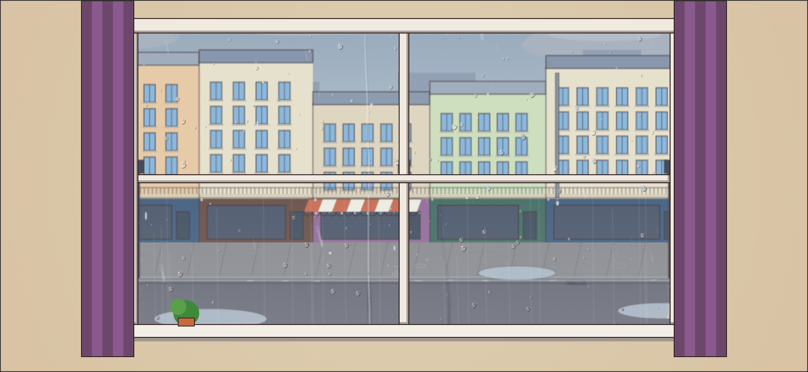
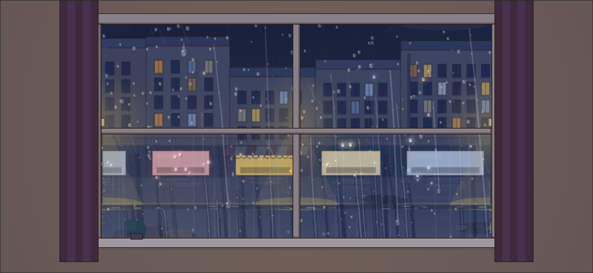
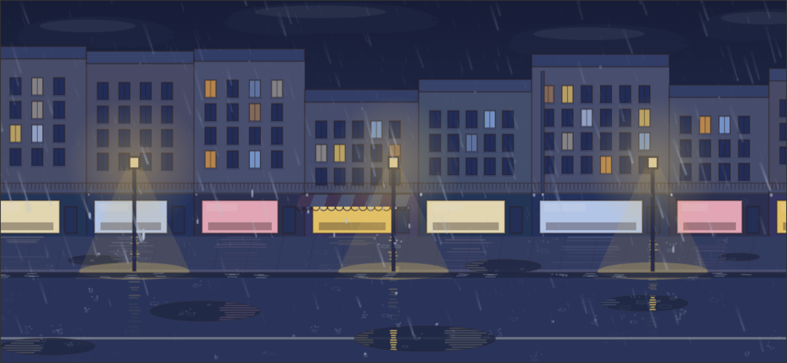
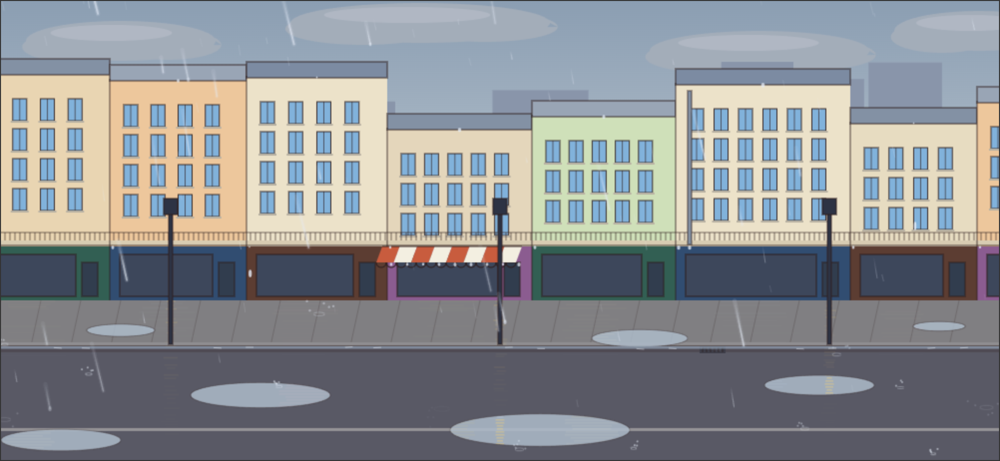
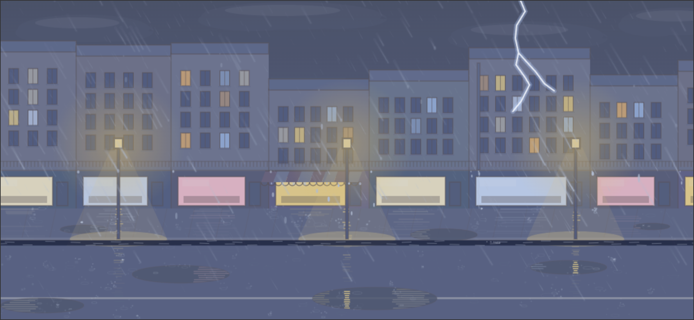

Intensité = le precip 0-1 de la météo réelle du lieu (dans l'app, pas de réglage à part : densité des gouttes, gouttes sur la vitre, éclaboussures, anneaux, ruissellement en découlent tous). Capture déterministe : ?preset=rue-nuit-averse&t=20&scale=2 (+ flash=1 pour figer un éclair).




